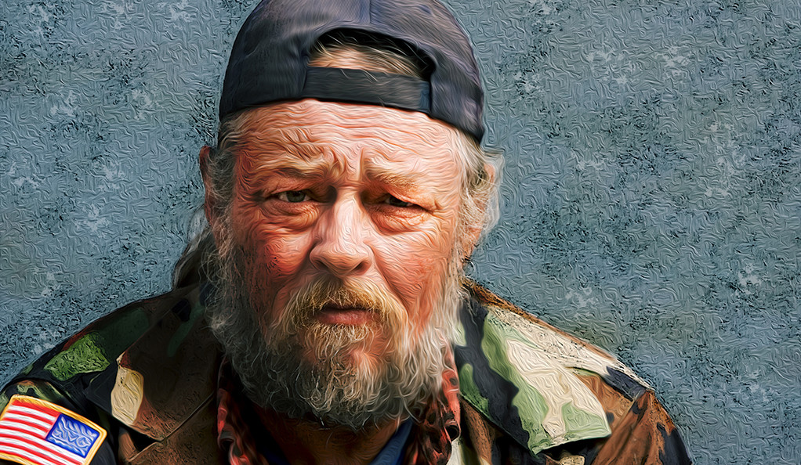

Did You Know?
Almost 60,000 families with children (57,971) are homeless on any given night in the United States
About 11% of the adult homeless population are veterans
In some parts of the country, senior citizens make up about 10 percent of the homeless population
You Can Help
Donate
Volunteer Now